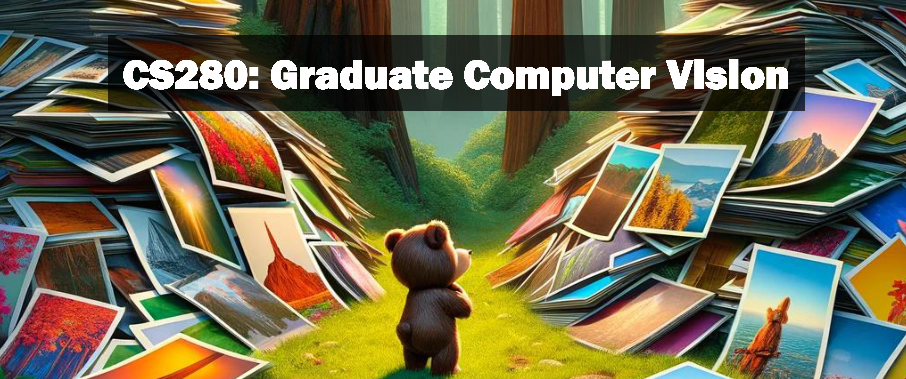

Logistics
UC Berkeley, Spring 2024
Time: MoWe 12:30PM - 1:59PM
Location: 1102 Berkeley Way West
Instructor: Alexei Efros
GSIs:
Office hours - Room 1204, first floor of Berkeley Way West
-
Suzie: Thursday 11-12pm
-
Lisa: Wed 11:30-12:30pm
Email policy: Please see the syllabus for the course email address. To keep discussions organized, please do not email the instructor or GSIs directly. We will not reply to any course-related emails except at this address.
We are using Ed Discussion for communication (private or public) as much as possible.
Magical course textbook that isn’t actually out: Foundations of Computer Vision by Antonio Torralba, Phillip Isola and William T. Freeman.
Lectures
Lecture slides will be posted online.
- Lecture 1: (1/17) Introduction to Computer Vision
- Lecture 2: (1/22) Fundamentals of Image Formation
- Lecture 3: (1/24) Blocks World: A Simple Vision System
- Lecture 4: (1/29) Transformations
- Lecture 5: (1/31) Radiometry
- Lecture 6: (2/5) Biological Vision Pt. 1
- Lecture 7: (2/7) Biological Vision Pt. 2
- Lecture 8: (2/12) Linear Systems in Vision
- Lecture 9: (2/14) Spatial & Temporal Filtering
- Lecture 10: (2/21) Sampling, Reconstruction, Pyramids
- Lecture 11: (2/26) Pyramids and Conv Nets
- Lecture 12: (2/28) Conv Nets Pt 2
- Lecture 13: (3/4) ConvNets Pt 3
- Lecture 14: (3/6) Representation Learning
- Lecture 15: (3/11) Transformers!
- Lecture 16: (3/13) Representation Learning pt 2
- Lecture 17: (3/18) Self-Supervised Learning
- Lecture 18: (3/20) Autoregressive Models
- Lecture 19: (4/1) Texture Models
- Lecture 20: (4/3) Texture Models pt 2
- Lecture 21: (4/8) Diffusion Models!
- Lecture 22: (4/10) Stereo and Epipolar Geometry
- Lecture 23: (4/15) Stereo and Epipolar Geometry pt 2
- Lecture 24: (4/17) Exam (duh duh duh)
- Lecture 25: (4/22) Struture From Motion
- Lecture 26: (4/24) Data!
Assignments
All questions should be asked on Ed or in OH. All assignments will be submitted to bcourses.
- HW1 is out! Due Monday, Feb 5th at 11:59pm
- HW2 is out! Due Monday, March 5th at 11:59pm
- HW3 is out! Due Tuesday, April 9th at 11:59pm
Additional Materials
- Computer Vision: Algorithms and Applications (available free online)
- Spring 2023 Course Website